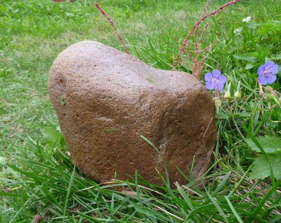

Энергия песка и камня


Песок и камень относятся к негорючим материалам. К
идее использования их для выработки энергии пришли исходя из теории
относительности А. Эйнштейна, который в 1905 году получил формулу,
связывающую энергию тела W с его массой m:
W = mcм2, (1)
где с = 3.10м8 м/c – скорость света. До этого соотношение (1)
было известно только для электромагнитного поля. Эйнштейн же обобщил
его на любые тела, лишь бы у них была масса. Так песок и камень
оказались лучшим топливом: в валяющемся на земле булыжнике по теории
относительности содержится столько энергии, сколько потребляет на тепло и
свет целый город в течение года.

У учения Эйнштейна есть целая армия слепых последователей, называемых релятивистами, которые образовали своего рода секту в научном мире. Релятивисты считают формулу (1) величайшим достижением своего Бога. По их мнению, соотношение (1) говорит о тождественности массы и энергии. Ландау и Лифшиц учат наших студентов, что у неподвижных тел есть энергия покоя, равная mcм2 [1]. Ведущий научный сотрудник ФИАН Б. Болотовский аналогично поучает школьников: говорить, что соотношение (1) не означает тождественности массы и энергии – это всё равно, что сказать – равенство 2 = 2 не тождество, так как справа стоит правая двойка, а слева – левая [2]. Даже термоядерную энергию релятивисты пытаются получать из массы или её дефекта. Руководитель работ по токамаку в Сибири академик Э.П. Кругляков прямо пишет: «Термоядерная (как, впрочем, и ядерная) энергетика базируется на эйнштейновском дефекте масс. При слиянии лёгких ядер в более тяжелые эта «потерянная» масса превращается в энергию» [3]. На самом деле, при ядерных реакциях, как и при химических (что показал ещё М.В. Ломоносов), масса продуктов реакции не изменяется и ни во что не превращается. Превращаются одни виды материи в другие с выделением (или поглощением) энергии. Масса не является материальным объектом – это лишь один из параметров тела (как объем, длина и т.д.), а из параметра никакой энергии получить нельзя. Не с этой ли ошибкой связаны 60-летние неудачи релятивистов с токамаком?
Беспочвенны также мечты релятивистов о получении колоссальной экологически чистой энергии из массы частиц и античастиц при их аннигиляции. И здесь масса исходных частицы и античастицы равна сумме масс образующихся фотонов. Затраты же энергии на получение антиматерии много больше её выделения при аннигиляции.
Как показано нами, формула (1) справедлива лишь для тел, которые могут двигаться только с одной скоростью c [4, 5]. К ним относятся разные виды электромагнитного поля – радиоволны, свет, рентгеновское и гамма излучения. На корпускулярные виды материи формула распространена Эйнштейном ошибочно в результате математической ошибки. Он потерял постоянную интегрирования при взятии неопределённого интеграла уравнения движения. При правильном интегрировании никакой энергии у валяющегося булыжника не будет.
Тем не менее, один «ученый» предложил президенту Б.Н. Ельцину проект получения энергии из камня и получил на него из госбюджета 120 миллионов рублей [6]. Наш президент, видимо, сам был релятивистом, в советниках не нуждался, поэтому деньги выдали сразу. Где сейчас тот изобретатель, и наказали ли кого за нецелевое использование бюджета?
Для того, чтобы убедиться в ошибочности взглядов релятивистов, достаточно провести простенький опыт: группу наиболее рьяных из них отправить на зимовку на необитаемый остров в Ледовитом океане, дав на отопление мешок камней.
Мы не будем обсуждать мнений другой антинаучной секты – общества «Наследие предков» и астрологов о том, что камни обладают колоссальной энергией, которая даже убивает плохих людей. Сразу перейдём к «серьёзным» изобретателям.
Директор Волгоградского института материаловедения профессор В.М. Соболев ещё в конце 90-х годов открыл новый источник неиссякаемой электроэнергии – обыкновенный песок SiO2 [7]. По его рецепту песок из карьера расплавляют, обрабатывают электрическим полем, после чего тот всю жизнь выдает электрический ток. Опытный образец электростанции мощностью 10 кВт, предназначенной для Севера, по сообщениям СМИ, был передан президенту В.В. Путину. Когда тот не прореагировал, проект был продан в Канаду за 168 миллионов долларов с целью совместного строительства заводов по выпуску таких аппаратов. Однако в Канаде почему-то пока молчат и не строят, а продолжают покупать нефть.
Другой вечный двигатель на песке изобрел специалист по финансам, президент энерго-экологического общества «Гравитон» из города Ярославля Г.В. Шуваев [8]. Впрочем, его аппарат может работать также на нуклонах, азоте и отходах производства. Принцип действия основан на разработанной автором философской картине мира «Циклоническая Вселенная» [9]. В аппарате, скромно названном «Электрогенератор Шуваева Г.В.», атомы и нуклоны поштучно подаются в фокус лазерного излучения. Там, по словам автора, их потенциальная энергия «размораживается», переходя в кинетическую, которая снимается в виде электрического тока с помощью сетчатых электродов.
Изобретатель не учёл, что ядра атомов кремния, кислорода, азота относятся к наиболее прочным и при разрушении не выделяют энергии, а главный нуклон – протон вообще не разрушается даже в самых мощных ускорителях. Он не учитывает и то, что на работу мощного лазера затрачивается огромная энергия, а при разрушении частиц не образуется упорядоченного движения зарядов, т.е. тока. Поэтому и его аппарат работать не может. Однако это нисколько не смущает Шуваева, который перед Военно- финансовым училищем окончил сельскохозяйственный техникум по отделению литья и поэтому умеет хорошо заливать.
В обращении к президенту России Д.А. Медведеву Шуваев «заливает», что его аппарат уже реализован и работает [10]. Будто бы в 1994 – 1999 годах Российско-американским научно производственным центром «ГРУС» со штаб-квартирами в г. Коламбус (США) и г. Волгограде (Россия) были созданы бытовые электрогенераторы мощностью 3, 5 и 10 кВт размером со стиральную машину. Компания «Плаг ПАУЭР» (США) должна их производить и продавать по цене 4000 долларов за штуку. По словам автора, генераторы Шуваева были «самым тщательным образом проверены в лучших лабораториях мира», и даже въедливые американские ученые «признали реальность нового способа извлечения энергии, которая добывалась при разрушении атомов кварцевого песка». Несмотря на это, американцы почему-то объявили на генераторы запрет, как в свое время отвергли вечный двигатель Н. Теслы. Поэтому изобретатель вернулся на родину, где предложил нам проект «Лазерная энергетика» [11]. Лавры упоминавшегося «ученого с большой дороги», которому президент Б.Н. Ельцин выделил без экспертизы 120 миллионов рублей на получение энергии из камня, не дают покоя и Шуваеву. Он просит Д.А. Медведева финансировать его «песочный» проект из госбюджета, а его самого назначить на должность «Научный руководитель программы по реализации НИОКР, производства и совершенствования лазерных электрогенераторов».
Проект Шуваева предусматривает производство сотен миллиардов лазерных электрогенераторов разной мощности и назначения, т.е. по несколько десятков штук на каждого жителя Земли, включая дикарей Африки и Австралии и маленьких детей. Окупаемость проекта оценена тремя – пятью днями. А если до финансирования попросить научного руководителя показать якобы уже созданный действующий макет?
Из приведенного обзора мы видим новую особенность изобретателей вечных двигателей XXI века, кроме отмеченных в [1]: с целью получения денег они без стеснения прибегают к обману и лжерекламе, не опасаясь быть привлеченным к уголовной ответственности за откровенное враньё. Ни у кого и никогда вечный двигатель ещё не работал, в том числе с использованием в качестве топлива песка и камня. Ни один изобретатель не может предъявить комиссии действующий макет.
ЛИТЕРАТУРА
1. Л.Д. Ландау, Е.М. Лифшиц. Теория поля. М., Физматлит, 1960, с. 37
2. Б. Болотовский. Простой вывод формулы E = mc2. Квант, 2005, № 6, с. 3 – 7
3. Э.П. Кругляков. Звёздные реакторы на пути к термоядерной энергетике. Наука из первых рук, 2005, № 2(5), с. 54 - 61
4. В. Петров. E = mc2 – гениальная догадка или ошибка А. Эйнштейна? Инженер, 2007, № 7, с. 8 - 10
5. В.М. Петров. Мифы современной физики. М., УРСС, 2012, с. 147 – 154
6. Э.П. Кругляков. «Ученые» с большой дороги. М., Наука, 2001, с. 187;
«Ученые» с большой дороги – 3. М., Наука, 2009, с. 215
7. Наука зарабатывать на науку. Не может быть, 2001, № 11, с. 6
8. Пат. Заявка РФ № 2004135299
9. Г.В. Шуваев. Циклоническая Вселенная (научная картина мира). Лазерная
энергетика, Ярославль, 2009; пат. заявка РФ № 2004124981
10. Г.В. Шуваев. Обращение к президенту РФ Д.А. Медведеву. Инженер, 2009, № 8, с. 5
11. Г.Шуваев. Проект «Лазерная энергетика». Инженер, 2009, № 8, с. 6 – 7